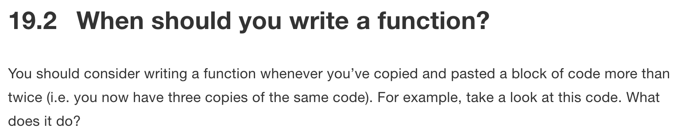

library("tidyverse")
example_references <- tibble(
text_citation = c('Gueorgi Kossinets and Duncan J. Watts, "Origins of Homophily in an Evolving Social Network," American Journal of Sociology 115 (2009):414, accessed December 5, 2014, doi:10.1086/599247',
'Morey, C. C., Cong, Y., Zheng, Y., Price, M., & Morey, R. D. (2015). The color-sharing bonus: Roles of perceptual organization and attentive processes in visual working memory. Archives of Scientific Psychology, 3, 18–29. https://doi.org/10.1037/arc0000014',
'Barros, B., Read, T. & Verdejo, M. F. (2008) Virtual collaborative experimentation:
an approach combining remote and local labs. IEEE Transactions on Education. 51 (2),
242–250. Available from: doi:10.1109/TE.2007.908071'))At least once a month I’m tasked with something that involves working with DOI, but I’ve never bothered to write a function for extracting these from texts. Time to end that by putting together a tidyversesque add_doi() function!
… wait, why?
The R for Data Science book has lots of excellent advice, including this snippet about reducing duplicated code by writing functions:

So, what are DOI? DOI (Digital Object Identifiers) are the gold standard for citations. They’re guaranteed to point directly to the resource you care about. But how can we reliably extracting DOI from, for example, the following references?
CrossRef have a great blogpost about how to match DOIs using regular expressions where they recommend the following regex, which matches 97% of the 74.9 million DOI they tested. The majority of the ~500,000 not matched by this regex are from the bad old days of the early noughties, and outside of our interest.
doi_regex <- "10.\\d{4,9}/[-._;()/:a-z0-9A-Z]+"Using str_extract() from the tidyverse package stringr allows us to extract the DOIs from our reference:
example_references %>%
mutate(doi = str_extract(text_citation, doi_regex))# A tibble: 3 × 2
text_citation doi
<chr> <chr>
1 "Gueorgi Kossinets and Duncan J. Watts, \"Origins of Homophily in an Ev… 10.1…
2 "Morey, C. C., Cong, Y., Zheng, Y., Price, M., & Morey, R. D. (2015). T… 10.1…
3 "Barros, B., Read, T. & Verdejo, M. F. (2008) Virtual collaborative exp… 10.1…This can all be rolled together into a function; add_doi(). If you’re unfamiliar with !!, enquo and := that’s because I’m using tidyeval, find out more about tidyeval here.
add_doi <- function(.data, citation_column, name = "doi") {
citation_column <- enquo(citation_column)
if (name != "n" && name %in% colnames(.data)) {
rlang::abort(glue::glue("Column `{name}` already exists in the data"))
}
.data %>%
mutate(!!name := str_extract(!!citation_column, "10.\\d{4,9}/[-._;()/:a-z0-9A-Z]+"))
}Because the function is written with tidyeval I can use naked column names just as a I would with dplyr::add_count():
example_references %>%
add_doi(text_citation)# A tibble: 3 × 2
text_citation doi
<chr> <chr>
1 "Gueorgi Kossinets and Duncan J. Watts, \"Origins of Homophily in an Ev… 10.1…
2 "Morey, C. C., Cong, Y., Zheng, Y., Price, M., & Morey, R. D. (2015). T… 10.1…
3 "Barros, B., Read, T. & Verdejo, M. F. (2008) Virtual collaborative exp… 10.1…Reuse
Citation
BibTeX citation:
@online{hadley2019,
author = {Hadley, Charlie},
title = {One Weird Regex Matches 97\% of {DOI...}},
date = {2019-03-13},
url = {https://visibledata.co.uk/posts/2019-03-13_extracting-doi-from-text},
langid = {en}
}
For attribution, please cite this work as:
Hadley, Charlie. 2019. “One Weird Regex Matches 97% of
DOI...” March 13, 2019. https://visibledata.co.uk/posts/2019-03-13_extracting-doi-from-text.